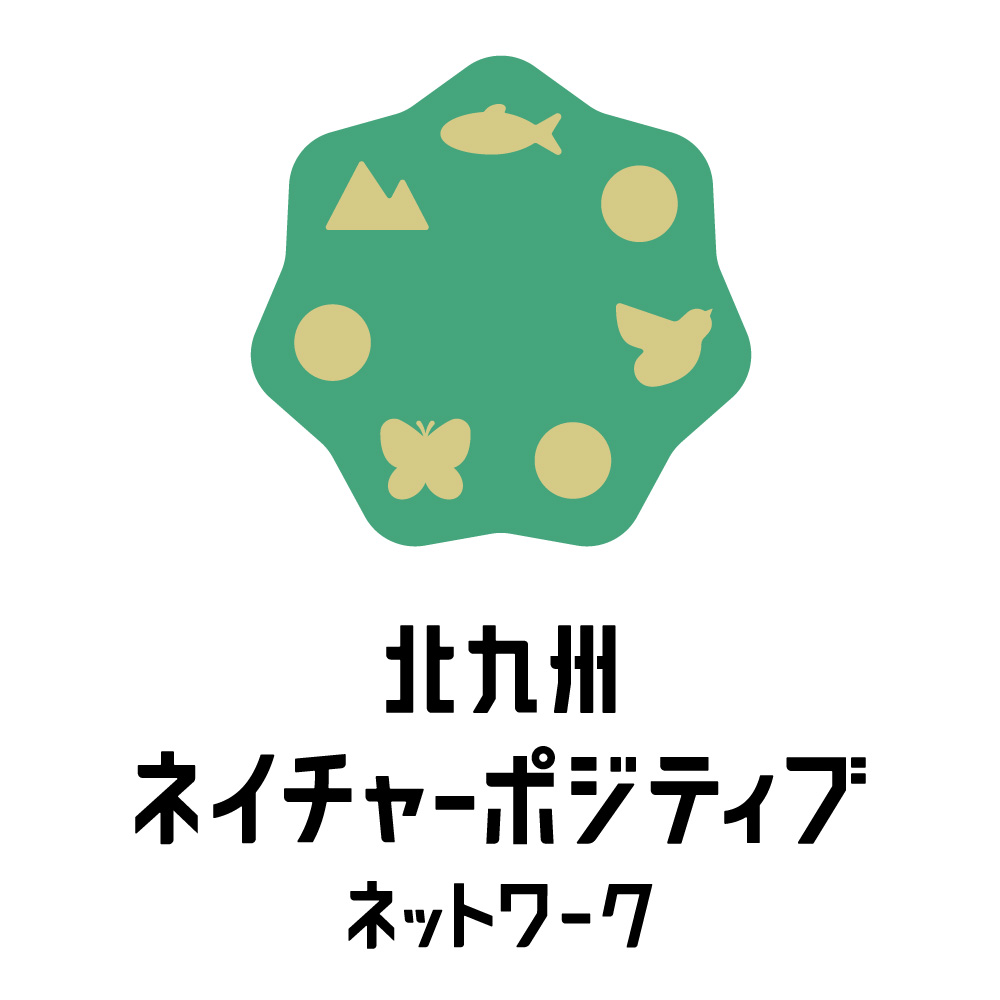

北九州市は、失われた生物多様性を回復させ、自然資本を豊かにする「ネイチャーポジティブ」の実現を目指し、令和7年11月14日に「北九州ネイチャーポジティブネットワーク」を立ち上げました。
当ネットワークは、産学官民が連携し、北九州の豊かな自然を未来へつなぐための具体的な行動を推進するプラットフォームです。
発足からわずか１ヶ月程度の12月24日現在、企業・団体・個人合わせて既に50者の方にご登録いただいています！
ご参加いただいている会員情報はこちらからご覧いただけます
ご興味のある方はぜひこちらからご登録ください。